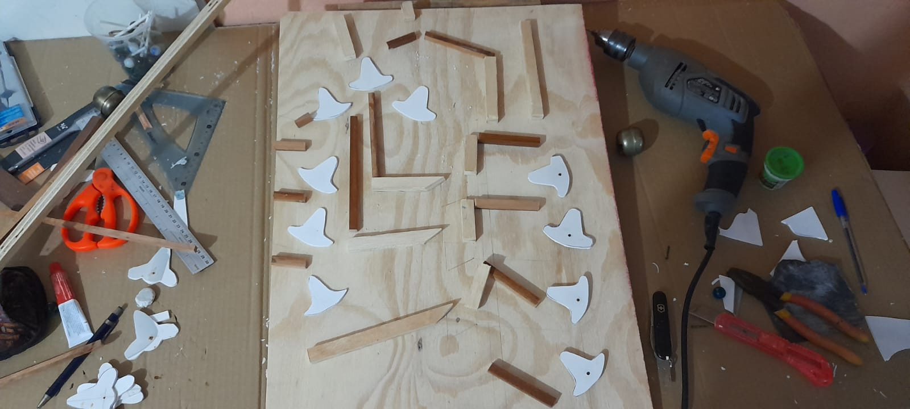

Eco
Byte
Eco
Byte
Nuestro producto ecológico: La calculoadora reciclada
Eco
Byte
Nuestro producto ecológico: La calculoadora reciclada
Consta de una tabla de madera sobre la cual hay carriles hechos con pequeños pedazos de madera sobre las cuales ruedan canicas, en determinadas rutas las canicas se encuentran con plasticos que dependiendo su estado; la canica irá de un lado o a otro.
Se puede decir que la calculadora funciona en sistema binario, debido a que los plasticos solo tienen dos estados, izquierda o derecha, uno o cero, de estos es de donde se obtiene e insertan los datos para escribir los datos de la operación o leer el resultado.
Cuando la operación está lista la canica toma una ruta en la que llega a un pequeño cascabel que avisa que la operación terminó.
Esta calculadora puede: Sumar, multiplicar, restar y dividir, sin embargo el modelo que hemos realizado está limitado hasta las restas. Con algunas extensiones la calculadora es capaz de calcular funciones trigonometricas, logaritmos, potenicas, raices, etc.
Nos decidimos por hacer este producto por varios motivos, en primer lugar deseabamos algo que tuviera que ver con programación pero a la vez que pudieramos elaborarlo sin gastar un solo peso con productos reciclados. Es así como encontramos en internet un modelo de 1950 llamado DIGI-COMP 2, esta fué nuestra principal inspiración para hacer el producto, por lo que decidimos traerlo nuevamente a la vida y ¿Por qué no? cuidando al medio ambiente.
Con este producto desamos que las personas interesadas puedan aprender sobre: ¿Qué es el sistema binario? ¿Cómo eran las primeras computadoras? y ¿Cómo funcionan las computadoras modernas?; todo esto de manera absolutamente divertida y sustentable.
Tenemos disponibles 2 modelos, uno grande completamente funcional y otros pequeños cuya función es servir de modelos representativos y de guía para entender las preguntas hechas anteriormente.
Para el modelo grande necesitamos de:
Para los modelos pequeños necesitamos de:
En primer lugar pusimos los palos de madera sobre la tabla en la forma del siguiente diseño para que puedan rodar las canicas y hacer pruebas.
Posteriormente colocamos un pequeño pedazo de palito de paleta hueco donde irán las plaquitas de plastico que cambian la dirección de las canicas las canicas.
Recortamos el plastico de una forma especial para que pudiera rodar la canica sobre ella y la colocamos con un clavo en su lugar correspondiente.
Colocamos alguas puertas que permitiran o no el acceso a las canicas a lugares especificos, esto con un pequeño trozo de madera y un clavito.
Y por único colocamos el cascabel en un lugar especifico donde la canica avisa que ya terminó el calculo.